19, 20, 21 ноября 2005. Две подруги и я один на Мамае.
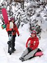
После открытия зимнего сезона пару недель назад, весь такой скучающий по глубокому снегу, засобирался опять на Мамай. Искал и нашел компанию в лице знакомой слюдянской сноубордистки Оксаны и ее байкальской подруги Ани. Девушки тоже скучали по снегу со страшной силой и эта сила двигала их по утоптанной тропе, медленно, но верно. Еще хорошо помогали в продвижении мои обещания дойти до лагеря через 15 минут, которые почему-то растягивались на 20, 30, 60 ...
Пришли поздновато, поставили палатку. Для начала двинули на учебный склон. Ну, это он только называется так, а на самом деле, чтобы на него подняться учеником быть мало. Нужны ноги, а ноги уже устали и потому скатившись 1-2 раза и вдоволь накувыркавшись в непривычно глубоком снегу девушки пошли греться в холодную палатку. Я правда тоже накувыркался на учебке, потому как ее уже со вчерашнего дня искатали в хлам, а по "могулу" я тогда не умел ездить :)
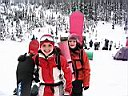
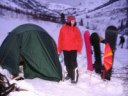
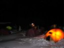
Приготовили ужин на газовой горелке, самый вкусный ужин - картошка-пюре :) то, что дома есть не станешь, здесь уплетается на ура :)
Потом в отмороженую голову ударила идея развести костер, дабы погреться, посушиться, чай там сварить и все такое. Поперлись в темноте за дровами, пилили, тащили их - это еще ладно, а вот разжигать костер из мамайских дров - это еще те ягодки! Не горит и все, только дымит, хоть ты тресни! С помощью попера и шаманских танцев чарез продолжительное время закипел котелок с чаем, а про погреться и посидеть у костра уже и забыли.
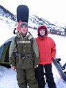
На следующий день я пошел на Три Березы, а мои подруги даже на учебный не пошли, решили ближнюю горку с трамплином покорять. От Трех Берез хотел в широкий кулуар попасть, но промахнулся и уехал дальше, чуть не упал в какой-то ручей, потом долго выгребал по лесу траверсом. А когда приехал вниз и дошел до палатки, оказалось, что девушки, уставшие от неожиданно большого количества ходьбы и борьбы со сноубордом в глубоком снегом, пораньше собрались и пошли к электричке, по дороге ругая меня вместе со всем Мамаем :) Вот так я и остался без компании местных слюдянских-байкальских сноубордисток :) Ну да делать нечего, народ ходит кататься на гору Мамай, и я пошел их догонять. Догонял уже после Трех Берез, по очень сильному боковому ветру на гребне. При ясной солнечной погоде наверху было очень красиво и очень-очень холодно.
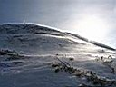
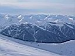
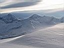
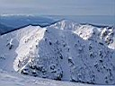
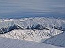
Сделав несколько фото, покатил вниз, следом за двуми сноубордистами. Ехать с горы Мамай нужно с опытными людьми, и хорошо, что из тех двух один такой был! Потому как там надо в одном месте сбоку выехать, да потом одно узкое и крутое место проехать (бутылка). Зато потом очень большое поле, по которому можно очень быстро лететь, закладывая большие дуги. Причем проезжается приличное расстояние, и уже внизу совсем не жалко сил и времени, потраченного на долгий подъем, а хочется скорее бежать наверх, чтобы получить еще одну порцию адреналина :)
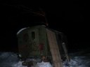
Однако уже третий час, весь народ собирается и катит на электричку. А я в отпуске, спешить некуда, остаюсь еще на денек. Но кто же знал, что с Мамая уедут ВСЕ! Вот так я и остался один среди снега, елок и молчаливых гор. Сначала как-то было тоскливо, а потом решил растопить печку в кунге и просушить вещи. Небо звездное, тишина и покой. В теплом кунге, при свете свечи было очень даже поуютнее, чем в палатке, а потому поужинав, завалился здесь же спать.
Ночью никто на приходил, выспался отлично. После завтрака, неспеша прогулялся на Лесной. Находиться одному в горах запрещено всеми правилами, но запретный плод слаще :) Непрерывное чувство контроля самого себя дает о себе знать, здесь никого нет и никто не придет на помощь, если например сломаешь ногу. От мысли о многодневном выползании до цивилизации просчитывается каждый следующий шаг. Горы почувствовали уважение к их силе и дали маленькому человечку спокойно покататься :)
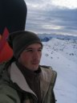
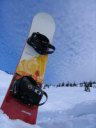
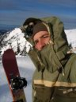
Сделав несколько отличных фото и спусков по Лесному, выкатил почти до кунга. Собрал вещи, часть их закопал в еловой роще. Там кто-то оборудовал замечательную стоянку с местом под палатку, "кухню" и "туалет", все это было раскидано между елок и соединено тропами-траншеями :) Очень уютное местечко в елках, в следующий раз там палатку поставлю. Вот и все, выкатил по тропе, подождал электричку, доехал до дома, и все ОК! Хоть одному и ходить, и кататься можно и даже интересно, но компанию надо искать.
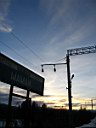
PS: на самом деле палатку ставить в молодых елках, что на противоположном берегу от кунга, нежелательно - это лавиноопасное место! Ставьте палатку в лесу, там где самые большие деревья.
Ноябрь 2005, октябрь 2006. Белокрылов А.Ю. Слюдянка.